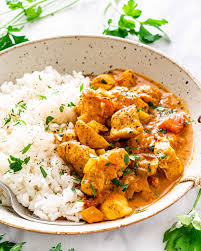

Chicken Curry
Chicken curry from the Indian subcontinent typically features chicken stewed in a tomato-based sauce seasoned with aromatic spices. This recipe, like many others, calls for curry powder (a spice blend made with coriander, turmeric, cumin, and chili powder).
Ingridents
- chicken
- onion
- tomato
- cooking oil
- masala
Steps
- Heat olive oil in a skillet over medium heat. Sauté onion until lightly browned
-
Stir in garlic, curry powder, cinnamon, paprika, bay leaf, ginger, sugar, and salt. Continue stirring for 2 minutes.
-
Add chicken pieces, tomato paste, yogurt, and coconut milk. Bring to a boil, reduce heat, and simmer for 20 to 25 minutesAdd chicken pieces, tomato paste, yogurt, and coconut milk. Bring to a boil, reduce heat, and simmer for 20 to 25 minutes
-
Remove bay leaf, and stir in lemon juice and cayenne pepper. Simmer 5 more minutes.
- serve hot and enjoy
back